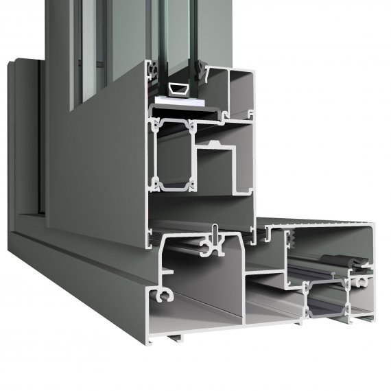

Алюмінієві розсувні вікна - мають цілу низку переваг перед металопластиковими та дерев'яними вікнами. Їхній середній термін експлуатації становить цілих 60 років і це не межа. Вікна з алюмінієвого профілю не втрачають своїх властивостей, не піддаються корозії і не страшні будь-які перепади температури. Ще один дуже важливий фактор – пожежна безпека даного типу профілів. При поділі площі приміщень саме його використовую як протипожежний бар'єр.

Алюмінієвий профіль Reynaers CP 155
Алюмінієвий профіль стійкіший до зовнішніх впливів, а його тепло- та звукоізоляційні параметри найкращі серед усіх профілів. Це не дивно, адже він є сплавом високоякісного металу. Він екологічно чистий і не виділяє шкідливих речовин у разі потрапляння сонячних променів та високої температури. Для дизайнерів та архітекторів він справжня знахідка, адже його можна виготовити великого розміру та пофарбувати у будь-який колір за шкалою RAL.
Недоліки
До недоліків можна віднести високу ціну та вразливість до механічних пошкоджень (дряпання). Але їх переваги геть-чисто перекреслюють недоліки цих профілів. Пропонуємо ознайомитися з алюмінієвими вікнами наступних виробників: